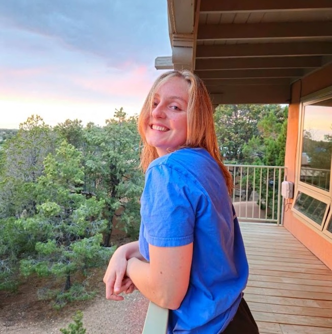

LinkedIn
Github
DOE CSGF
Scientific Computing @ Illinois
Parallel Programming Laboratory
I am a PhD Candidate in the Department of Computer Science at the University of Illinois at Urbana-Champaign, advised by Professor Luke Olson.
My research interests are broadly in parallel computing and spatial dataflow architectures, and my recent work focuses on sparse numerical algorithms for dataflow. In particular, I am interested in porting algebraic multigrid methods to the Cerebras Wafer Scale Engine. I spent the first couple years of my PhD in the Parallel Programming Laboratory, where I worked on load balancing techniques for over-decomposed task-based systems.
I'm fortunate to be funded by the 2023-2024 Andrew & Shana Laursen Fellowship and the DOE Computational Science Graduate Fellowship.
University of Illinois at Urbana-Champaign
PhD Candidate in Computer Science
2023 - Present, Champaign, IL
Brown University
Bachelor of Science in Applied Math and Computer Science
2018 - 2022, Providence, RI
Numerical Kernels on a Spatial Accelerator: A Study of Tenstorrent Wormhole
M. Taylor, C. Pearson, L. Berger-Vergiat, G. Long, and J. Ciesko
2026 arXiv preprint
Communication-Aware Diffusion Load Balancing for Persistently Interacting Objects
M. Taylor, K. Chandrasekar, L. V. Kale
2026 PDSEC Workshop @ IPDPS
Implementation of Conjugate Gradient Solver on Tenstorrent's Wormhole
M. Taylor, C. Pearson, L. Berger-Vergiat, and G. Long
Computer Science Research institute Summer Proceedings 2025, Sandia National Laboratories, Albuquerque, NM
CkIO: Parallel File Input for Over-Decomposed Task-Based Systems
M. Jacob, M. Taylor, L. V. Kale
2024 arXiv preprint
Mapping Unstructured Sparse Computation to Dataflow Architectures
(Abstract)
IPDPS 2026 PhD Forum
Communication-Aware Diffusion Load Balancing for Persistently Interacting Objects
2026 PDSEC Workshop @ IPDPS
Charm4Py: A Programming Model for Distributed Adaptive Python
Tutorial @ IPDPS 2026
Sparse Linear Solvers on Tenstorrent's Dataflow Architecture
2025 CSGF Program Review
Diffusion Load Balancing
2025 JLESC Workshop
Cerebras in HPC
2024 UIUC CAP Seminar
CkIO: Parallel File Input for Over-decomposed Systems
2024 JLESC Workshop
JLESC 2024, JLESC 2025
Session Chair
SC 2023, SC 2021
Student Volunteer
Outside of research, I am currently captain of the Illinois Women's Ultimate Frisbee team. At Brown, I was junior and senior captain of the Varsity Women's Equestrian team.
I have also played classical violin for over 15 years, with particularly formative experiences in the Albuquerque Youth Symphony, and the Brown University Orchestra and Chamber Music program. I was a 2017-2018 AYS season concerto competition winner and member of the Spera Trio.
Hosted on GitHub Pages — Theme by orderedlist